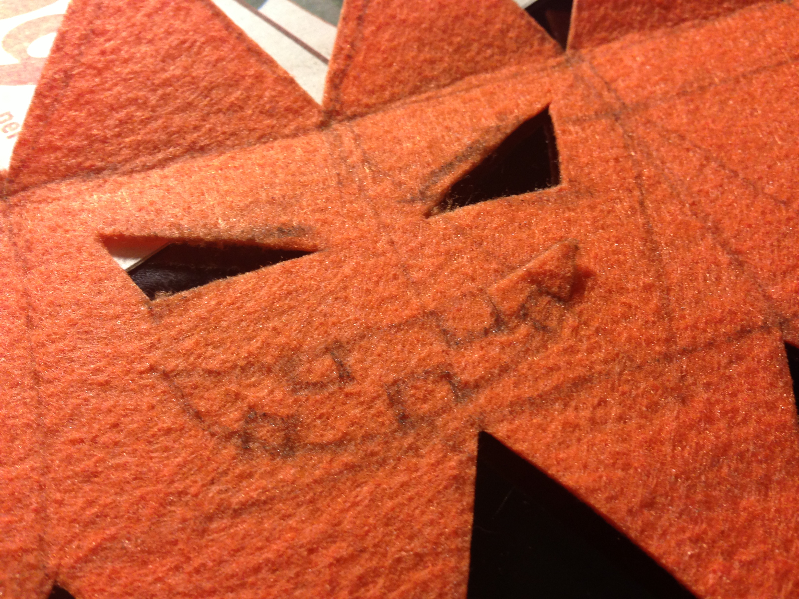

Designing variety of sewn circuits for children, including a blinking pouch, bracelet, and booklet, was intended to use only conductive thread, LEDs, and batteries, but not solder, complicated transistors, sensors, etc.
Sewn Bracelet

By sewing LEDs to the topical fishs eye connected to the battery pocket with conductive thread, young girls can understand howthis simple circuit works, seeing the negative face of a battery is connected to the short leg of LED, and the positive face of a battery is connected to the long leg of LED. Sewing ends of these tips to snaps finally let them know how the switch of the circuit works.
Sewn Jack O Lantern

Generally, boys are more hasty, and feeling bored with sewing. For those whom do not want to handle this complicated matters, I suggest esier and simple way to create their own toy with conductive fabric. Cutting felts following the drawn line, connecting legs of a LED with a coin battery inserted into a battery holder, and glueing edges of pumkins are all about making Jack O Lantern for their exciting holloweens.
Sewn Pouch


For those whom like detailed and complicated tingkering, I suggested a ribbone made flowers and butterfly paouch. Since I used tiny square LED block, not the one has legs, conductive paint was used instead of a solder, since soldering is too dangerous for young kids. Even though conductive paint is not really conductive to connect long line of circuits, it works as a connector perfectly connecting sewn conductive threads and LEDs, batteries.